import numpy as np
import matplotlib.pyplot as plt
plt.rcParams.update({
"figure.figsize": (7, 4),
"font.size": 11,
"axes.titlesize": 12,
})
def disk(radius):
r = int(radius)
y, x = np.ogrid[-r:r+1, -r:r+1]
return x*x + y*y <= radius*radius
def square(size):
return np.ones((size, size), dtype=bool)
def cross(size):
b = np.zeros((size, size), dtype=bool)
c = size // 2
b[c, :] = True
b[:, c] = True
return b
def offsets(se):
cy, cx = np.array(se.shape) // 2
ys, xs = np.where(se)
return list(zip(ys - cy, xs - cx))
def binary_dilation(img, se):
img = img.astype(bool)
py, px = np.array(se.shape) // 2
padded = np.pad(img, ((py, py), (px, px)), mode="constant", constant_values=False)
out = np.zeros_like(img, dtype=bool)
h, w = img.shape
for dy, dx in offsets(se):
out |= padded[py + dy:py + dy + h, px + dx:px + dx + w]
return out
def binary_erosion(img, se):
img = img.astype(bool)
py, px = np.array(se.shape) // 2
padded = np.pad(img, ((py, py), (px, px)), mode="constant", constant_values=False)
out = np.ones_like(img, dtype=bool)
h, w = img.shape
for dy, dx in offsets(se):
out &= padded[py + dy:py + dy + h, px + dx:px + dx + w]
return out
def opening(img, se):
return binary_dilation(binary_erosion(img, se), se)
def closing(img, se):
return binary_erosion(binary_dilation(img, se), se)
def show_binary(ax, img, title="", grid=True):
ax.imshow(img, cmap="gray_r", vmin=0, vmax=1, interpolation="nearest")
ax.set_title(title)
ax.set_xticks([])
ax.set_yticks([])
if grid:
ax.set_xticks(np.arange(-.5, img.shape[1], 1), minor=True)
ax.set_yticks(np.arange(-.5, img.shape[0], 1), minor=True)
ax.grid(which="minor", color="0.75", linewidth=0.5)
def show_row(images, titles, figsize=(10, 3), grid=True):
fig, axs = plt.subplots(1, len(images), figsize=figsize)
if len(images) == 1:
axs = [axs]
for ax, im, title in zip(axs, images, titles):
show_binary(ax, im, title, grid=grid)
plt.tight_layout()
plt.show()Morfología matemática
Este notebook ilustra:
- Operaciones morfológicas binarias: dilatación, erosión, apertura y cierre.
- Transformación hit-or-miss.
- Extracción de frontera, llenado de regiones y componentes conectadas.
- Adelgazamiento (thinning), engrosamiento (thickening) y poda.
- Morfología en escala de grises como máximos y mínimos locales.
Una imagen binaria se interpreta como un conjunto de pixeles. El elemento estructurante es una pequeña máscara que se desplaza sobre la imagen para preguntar por vecindades y formas locales.
1. Elemento estructurante
El elemento estructurante \(B\) define la vecindad usada por el operador morfológico.
Una buena forma de pensarlo es como una sonda geométrica:
- Una cruz usa vecindad de 4 vecinos.
- Un cuadrado usa una vecindad más amplia, incluyendo diagonales.
- Un disco es útil cuando queremos tratar formas aproximadamente redondas.
Cambiar el tamaño o la forma de \(B\) cambia completamente el resultado.
show_row(
[square(3), cross(5), disk(3)],
["Cuadrado 3x3", "Cruz 5x5", "Disco r=3"],
figsize=(8, 2.8)
)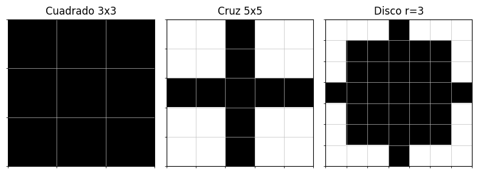
2. Dilatación y erosión binarias
Para una imagen binaria \(A\):
\[ A\oplus B = \{z:\ (\hat B)_z\cap A\neq \emptyset\} \]
\[ A\ominus B = \{z:\ (B)_z\subseteq A\} \]
Dilatación: pregunta si \(B\) toca al objeto. Por eso agranda regiones y puede unir componentes cercanas.
Erosión: pregunta si \(B\) cabe completamente dentro del objeto. Por eso contrae regiones y puede eliminar estructuras pequeñas.
A = np.zeros((23, 23), dtype=bool)
A[6:17, 7:16] = True
A[10:13, 16:19] = True
A[4:7, 10:13] = True
B = cross(5)
show_row(
[A, binary_dilation(A, B), binary_erosion(A, B)],
[r"$A$", r"$A\oplus B$", r"$A\ominus B$"],
figsize=(9, 3)
)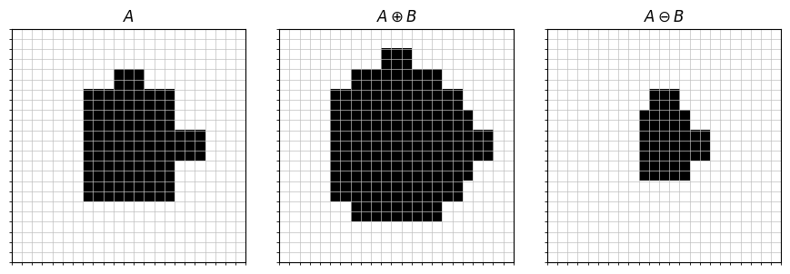
3. Apertura y cierre
La apertura y el cierre combinan erosión y dilatación:
\[ A\circ B = (A\ominus B)\oplus B \]
\[ A\bullet B = (A\oplus B)\ominus B \]
Apertura: elimina objetos claros pequeños o salientes delgados. Lo que desaparece durante la erosión no vuelve.
Cierre: rellena huecos oscuros pequeños y une quiebres angostos. Lo que se conectó durante la dilatación tiende a permanecer conectado.
A = np.zeros((36, 52), dtype=bool)
A[9:27, 8:32] = True
A[14:21, 32:44] = True
A[6:10, 14:18] = True
A[24:30, 4:10] = True
A[12:15, 20:23] = False
A[18:22, 25:30] = False
A[16:18, 37:39] = False
B = disk(3)
show_row(
[A, opening(A, B), closing(A, B)],
["Original", r"Apertura $A\circ B$", r"Cierre $A\bullet B$"],
figsize=(10, 3),
grid=False
)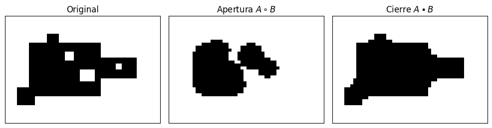
4. Hit-or-miss
Esta transformación suele costar al principio porque no busca solo objeto, sino una configuración específica de objeto y fondo.
Se usan dos elementos estructurantes:
- \(B_1\): pixeles que deben pertenecer al objeto (hit);
- \(B_2\): pixeles que deben pertenecer al fondo (miss).
\[ A\otimes B = (A\ominus B_1)\cap(A^c\ominus B_2) \]
Traducción práctica:
Aquí debe haber objeto, aquí debe haber fondo, y si ambas condiciones se cumplen, marco una detección.
Esto sirve para detectar esquinas, extremos, patrones locales o puntos que pueden eliminarse durante adelgazamiento.
def hit_or_miss(img, b1, b2):
return binary_erosion(img, b1) & binary_erosion(~img, b2)
A = np.zeros((18, 28), dtype=bool)
A[3:9, 3:9] = True
A[10:15, 5:13] = True
A[5:14, 17:25] = True
# B1 exige objeto en la esquina superior izquierda de una ventana 3x3.
B1 = np.array([
[1, 1, 0],
[1, 1, 0],
[0, 0, 0]
], dtype=bool)
# B2 exige fondo alrededor de esa esquina.
B2 = np.array([
[0, 0, 1],
[0, 0, 1],
[1, 1, 1]
], dtype=bool)
H = hit_or_miss(A, B1, B2)
show_row(
[A, B1, B2, H],
[r"Imagen $A$", r"$B_1$: objeto", r"$B_2$: fondo", r"Detecciones"],
figsize=(11, 3)
)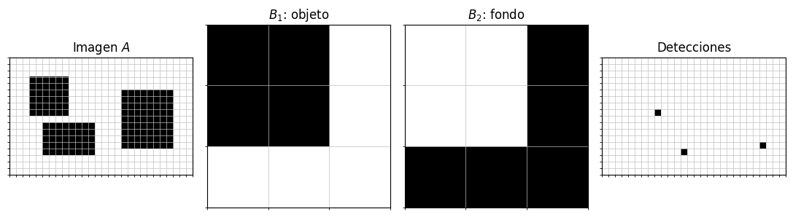
Cómo leer el ejemplo de hit-or-miss
En cada posición de la imagen:
- se verifica si \(B_1\) cabe dentro del objeto \(A\);
- se verifica si \(B_2\) cabe dentro del fondo \(A^c\);
- solo si ambas cosas ocurren, aparece un punto en el resultado.
Por eso hit-or-miss es más selectivo que una erosión común: incorpora condiciones sobre objeto y fondo.
5. Extracción de frontera
La frontera puede obtenerse restando una versión erosionada del objeto:
\[ \beta(A) = A - (A\ominus B) \]
La erosión quita una capa externa. Al restarla del objeto original, queda precisamente esa capa.
blob = np.zeros((70, 70), dtype=bool)
yy, xx = np.mgrid[:70, :70]
blob[((xx - 32) / 20)**2 + ((yy - 35) / 25)**2 < 1] = True
blob[(yy < 20) & (xx > 34) & (xx < 50)] = True
B = square(3)
eroded = binary_erosion(blob, B)
boundary = blob & ~eroded
show_row(
[blob, eroded, boundary],
[r"$A$", r"$A\ominus B$", r"$\beta(A)$"],
figsize=(9, 3),
grid=False
)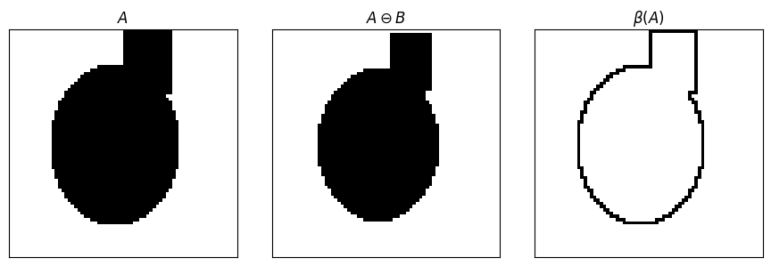
6. Llenado de regiones
El llenado de regiones parte desde una semilla \(p\) dentro de una frontera cerrada.
\[ X_0 = \{p\} \]
\[ X_k = (X_{k-1}\oplus B)\cap A^c \]
La dilatación hace crecer la semilla, y la intersección con \(A^c\) impide que el crecimiento atraviese la frontera. El algoritmo termina cuando \(X_k=X_{k-1}\).
boundary = np.zeros((42, 42), dtype=bool)
boundary[8, 8:34] = True
boundary[33, 8:34] = True
boundary[8:34, 8] = True
boundary[8:34, 33] = True
boundary[15:20, 18] = True
boundary[22:29, 25] = True
allowed = ~boundary
X = np.zeros_like(boundary)
X[20, 20] = True
snapshots = {0: X.copy()}
for k in range(1, 80):
X_next = binary_dilation(X, cross(3)) & allowed
X = X_next
if k in [4, 8, 12, 18]:
snapshots[k] = X.copy()
if np.array_equal(X_next, binary_dilation(X_next, cross(3)) & allowed):
break
filled = boundary | X
show_row(
[boundary, snapshots[0], snapshots[4], snapshots[8], snapshots[12], filled],
["Frontera", r"$X_0$", r"$X_4$", r"$X_8$", r"$X_{12}$", "Resultado"],
figsize=(12, 3)
)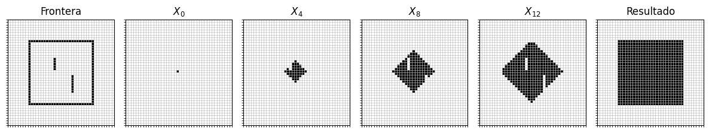
7. Labeling y componentes conectadas
El labeling asigna un número distinto a cada componente conectada.
Una componente conectada es un conjunto maximal de pixeles del objeto que pueden alcanzarse entre sí usando una vecindad dada.
- Con 4-conectividad usamos una cruz.
- Con 8-conectividad usamos un cuadrado.
Esto permite contar objetos y medir propiedades por componente.
def label_components(img):
img = img.astype(bool)
labels = np.zeros(img.shape, dtype=int)
current = 0
h, w = img.shape
for y0 in range(h):
for x0 in range(w):
if not img[y0, x0] or labels[y0, x0] != 0:
continue
current += 1
stack = [(y0, x0)]
labels[y0, x0] = current
while stack:
y, x = stack.pop()
for dy, dx in [(-1, 0), (1, 0), (0, -1), (0, 1)]:
yy, xx = y + dy, x + dx
if 0 <= yy < h and 0 <= xx < w and img[yy, xx] and labels[yy, xx] == 0:
labels[yy, xx] = current
stack.append((yy, xx))
return labels, current
img = np.zeros((54, 72), dtype=bool)
yy, xx = np.mgrid[:54, :72]
for cy, cx, ry, rx in [(14, 14, 8, 10), (13, 45, 7, 12), (34, 24, 9, 13), (38, 54, 8, 9)]:
img |= ((yy - cy) / ry)**2 + ((xx - cx) / rx)**2 < 1
img[25:30, 46:62] = True
labels, n = label_components(img)
fig, axs = plt.subplots(1, 2, figsize=(9, 3.5))
show_binary(axs[0], img, "Imagen binaria", grid=False)
axs[1].imshow(labels, cmap="tab20", interpolation="nearest", vmin=0, vmax=max(n, 1))
axs[1].set_title(f"{n} componentes etiquetadas")
axs[1].set_xticks([])
axs[1].set_yticks([])
for k in range(1, n + 1):
ys, xs = np.where(labels == k)
axs[1].text(xs.mean(), ys.mean(), str(k), color="white", ha="center", va="center", fontsize=14, weight="bold")
plt.tight_layout()
plt.show()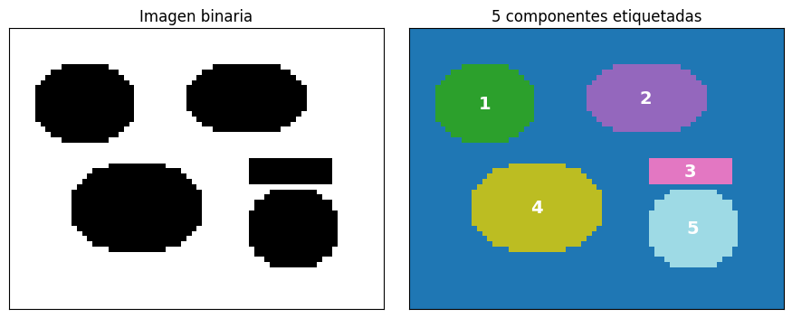
8. Thinning, thickening y pruning
Thinning adelgaza una figura removiendo pixeles de borde, intentando preservar conectividad. No es una erosión común: una erosión puede romper el objeto.
Thickening es el dual conceptual: agrega pixeles siguiendo reglas locales.
Pruning elimina ramas cortas o espolones producidos por ruido después de esqueletizar.
Muchos algoritmos de thinning y pruning usan patrones locales del tipo hit-or-miss.
def zhang_suen_thinning(img, max_iter=100):
img = img.astype(np.uint8).copy()
h, w = img.shape
for _ in range(max_iter):
changed = False
for step in [0, 1]:
remove = []
for y in range(1, h - 1):
for x in range(1, w - 1):
if img[y, x] == 0:
continue
p2, p3, p4 = img[y-1, x], img[y-1, x+1], img[y, x+1]
p5, p6, p7 = img[y+1, x+1], img[y+1, x], img[y+1, x-1]
p8, p9 = img[y, x-1], img[y-1, x-1]
nbrs = [p2, p3, p4, p5, p6, p7, p8, p9]
nsum = sum(nbrs)
transitions = sum((nbrs[i] == 0 and nbrs[(i + 1) % 8] == 1) for i in range(8))
if not (2 <= nsum <= 6 and transitions == 1):
continue
if step == 0:
c1 = p2 * p4 * p6 == 0
c2 = p4 * p6 * p8 == 0
else:
c1 = p2 * p4 * p8 == 0
c2 = p2 * p6 * p8 == 0
if c1 and c2:
remove.append((y, x))
if remove:
changed = True
for y, x in remove:
img[y, x] = 0
if not changed:
break
return img.astype(bool)
A = np.zeros((80, 80), dtype=bool)
A[14:63, 34:47] = True
A[24:37, 18:62] = True
A[48:61, 20:35] = True
A[47:66, 52:64] = True
thin = zhang_suen_thinning(A)
thick = binary_dilation(thin, disk(4))
# Poda simple: eliminar puntos finales durante algunas iteraciones.
endpoint_kernels = [
(np.array([[0,0,0],[0,1,0],[0,1,0]], dtype=bool), np.array([[1,1,1],[1,0,1],[1,0,1]], dtype=bool)),
(np.array([[0,0,0],[0,1,1],[0,0,0]], dtype=bool), np.array([[1,1,1],[1,0,0],[1,1,1]], dtype=bool)),
(np.array([[0,1,0],[0,1,0],[0,0,0]], dtype=bool), np.array([[1,0,1],[1,0,1],[1,1,1]], dtype=bool)),
(np.array([[0,0,0],[1,1,0],[0,0,0]], dtype=bool), np.array([[1,1,1],[0,0,1],[1,1,1]], dtype=bool)),
]
pruned = thin.copy()
for _ in range(6):
endpoints = np.zeros_like(pruned)
for k1, k2 in endpoint_kernels:
endpoints |= hit_or_miss(pruned, k1, k2)
pruned &= ~endpoints
show_row(
[A, thin, thick, pruned],
["Original", "Thinning", "Thickening", "Pruning"],
figsize=(11, 3),
grid=False
)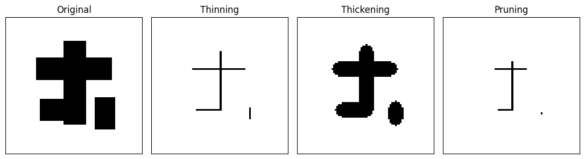
9. Morfología en escala de grises
En escala de grises, la imagen ya no es solo un conjunto. Es una función:
\[ f:\mathbb{Z}^2\rightarrow\mathbb{R} \]
Si el elemento estructurante es plano, las operaciones se vuelven muy intuitivas:
- dilatación gris: reemplaza cada pixel por el máximo local;
- erosión gris: reemplaza cada pixel por el mínimo local.
Por eso la dilatación expande regiones brillantes y la erosión expande regiones oscuras.
def gray_dilation(f, se):
f = np.asarray(f, dtype=float)
py, px = np.array(se.shape) // 2
padded = np.pad(f, ((py, py), (px, px)), mode="edge")
h, w = f.shape
stack = []
for dy, dx in offsets(se):
stack.append(padded[py + dy:py + dy + h, px + dx:px + dx + w])
return np.max(np.stack(stack), axis=0)
def gray_erosion(f, se):
f = np.asarray(f, dtype=float)
py, px = np.array(se.shape) // 2
padded = np.pad(f, ((py, py), (px, px)), mode="edge")
h, w = f.shape
stack = []
for dy, dx in offsets(se):
stack.append(padded[py + dy:py + dy + h, px + dx:px + dx + w])
return np.min(np.stack(stack), axis=0)
def gray_opening(f, se):
return gray_dilation(gray_erosion(f, se), se)
def gray_closing(f, se):
return gray_erosion(gray_dilation(f, se), se)
n = 220
y, x = np.mgrid[0:n, 0:n]
f = 0.35 + 0.35 * (x / n)
f += 0.35 * np.exp(-((x - 70)**2 + (y - 100)**2) / (2 * 18**2))
f -= 0.28 * np.exp(-((x - 145)**2 + (y - 125)**2) / (2 * 22**2))
f += 0.08 * np.sin(x / 12) * np.sin(y / 18)
f = np.clip(f, 0, 1)
B = disk(5)
fd = gray_dilation(f, B)
fe = gray_erosion(f, B)
fig, axs = plt.subplots(1, 3, figsize=(10, 3.2))
for ax, im, title in zip(axs, [f, fd, fe], [r"$f$", r"$f\oplus B$", r"$f\ominus B$"]):
ax.imshow(im, cmap="gray", vmin=0, vmax=1)
ax.set_title(title)
ax.set_xticks([])
ax.set_yticks([])
plt.tight_layout()
plt.show()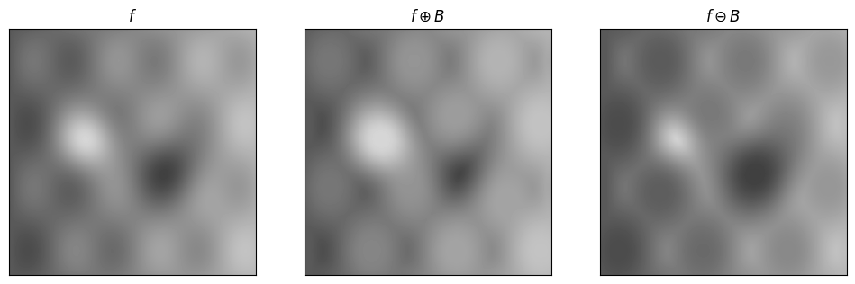
10. Gradiente, top-hat y bottom-hat
El gradiente morfológico mide contraste local:
\[ g = (f\oplus B) - (f\ominus B) \]
Si una zona es plana, máximo y mínimo local son parecidos. Si hay un borde, la diferencia aumenta.
Top-hat y bottom-hat extraen detalles pequeños:
\[ T_{hat}(f)=f-(f\circ B) \]
\[ B_{hat}(f)=(f\bullet B)-f \]
Top-hat: lo que la apertura eliminó, típicamente detalles brillantes pequeños.
Bottom-hat: lo que el cierre rellenó, típicamente detalles oscuros pequeños.
B = disk(7)
opened = gray_opening(f, B)
closed = gray_closing(f, B)
gradient = gray_dilation(f, B) - gray_erosion(f, B)
tophat = f - opened
bothat = closed - f
fig, axs = plt.subplots(1, 4, figsize=(12, 3))
for ax, im, title in zip(axs, [f, gradient, tophat, bothat], [r"$f$", "Gradiente", "Top-hat", "Bottom-hat"]):
vmax = 1 if title == r"$f$" else max(float(im.max()), 1e-6)
ax.imshow(im, cmap="gray", vmin=0, vmax=vmax)
ax.set_title(title)
ax.set_xticks([])
ax.set_yticks([])
plt.tight_layout()
plt.show()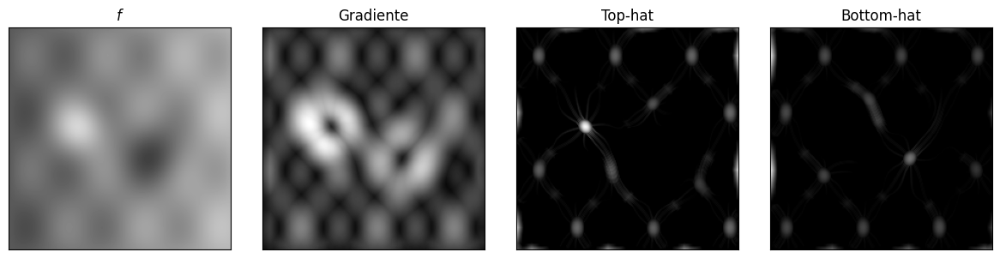
11. Ejemplos con scikit-image
Hasta ahora implementamos las operaciones principales desde cero para entender la mecánica. En trabajo práctico conviene usar librerías probadas.
scikit-image tiene implementaciones listas para:
- morfología binaria:
binary_dilation,binary_erosion,binary_opening,binary_closing; - limpieza de máscaras:
remove_small_objects,remove_small_holes; - labeling:
measure.label; - esqueletos:
skeletonize,thin; - morfología en escala de grises:
dilation,erosion,opening,closing,white_tophat,black_tophat.
La ventaja es que estas funciones son más rápidas, están testeadas y manejan muchos detalles de borde.
from skimage import data, filters, measure, morphology, util
from skimage.color import rgb2gray
print("scikit-image cargado correctamente")scikit-image cargado correctamente11.1 Operadores binarios con skimage.morphology
Primero repetimos la idea de apertura y cierre, pero usando funciones de skimage.
En skimage, el elemento estructurante se pasa como footprint. Por ejemplo:
footprint = morphology.disk(3)
opened = morphology.binary_opening(mask, footprint=footprint)Esto hace lo mismo conceptualmente que nuestras funciones, pero con implementación optimizada.
mask = np.zeros((90, 130), dtype=bool)
yy, xx = np.mgrid[:90, :130]
mask |= ((yy - 42) / 22)**2 + ((xx - 45) / 28)**2 < 1
mask |= ((yy - 45) / 15)**2 + ((xx - 88) / 18)**2 < 1
mask[38:44, 63:72] = True # puente delgado
mask[25:31, 35:41] = False # hueco pequeño
mask[52:59, 86:94] = False # otro hueco
rng = np.random.default_rng(12)
noisy_mask = mask.copy()
noisy_mask[rng.random(mask.shape) < 0.012] = True
noisy_mask[rng.random(mask.shape) < 0.006] = False
footprint = morphology.disk(3)
opened = morphology.binary_opening(noisy_mask, footprint=footprint)
closed = morphology.binary_closing(noisy_mask, footprint=footprint)
clean = morphology.binary_closing(opened, footprint=footprint)
show_row(
[noisy_mask, opened, closed, clean],
["Máscara con ruido", "Apertura", "Cierre", "Apertura + cierre"],
figsize=(12, 3),
grid=False
)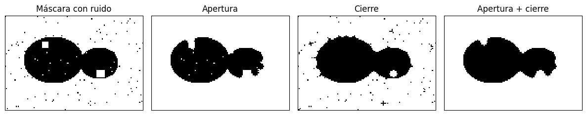
11.2 Limpieza de máscaras: objetos pequeños y huecos
remove_small_objects elimina componentes conectadas con área menor que un umbral.
remove_small_holes rellena huecos oscuros menores que un umbral.
Estas funciones son muy usadas después de segmentar una imagen, porque una segmentación real suele traer puntos aislados, huecos pequeños o regiones espurias.
clean_objects = morphology.remove_small_objects(noisy_mask, min_size=80)
clean_holes = morphology.remove_small_holes(clean_objects, area_threshold=120)
show_row(
[noisy_mask, clean_objects, clean_holes],
["Original ruidosa", "Sin objetos pequeños", "Huecos pequeños rellenados"],
figsize=(10, 3),
grid=False
)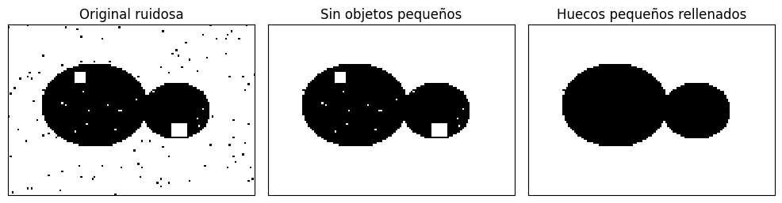
11.3 Labeling con measure.label
measure.label etiqueta componentes conectadas.
Después, measure.regionprops permite medir propiedades por objeto: área, centroide, bounding box, excentricidad, etc. Esto es una rutina típica para pasar desde segmentación a cuantificación.
labels = measure.label(clean_holes, connectivity=2)
props = measure.regionprops(labels)
fig, axs = plt.subplots(1, 2, figsize=(10, 4))
axs[0].imshow(clean_holes, cmap="gray")
axs[0].set_title("Máscara limpia")
axs[0].set_xticks([])
axs[0].set_yticks([])
axs[1].imshow(labels, cmap="tab20")
axs[1].set_title(f"Labeling: {len(props)} componentes")
axs[1].set_xticks([])
axs[1].set_yticks([])
for region in props:
y, x = region.centroid
axs[1].text(x, y, str(region.label), color="white", ha="center", va="center", weight="bold")
plt.tight_layout()
plt.show()
for region in props:
print(f"label={region.label:2d} area={region.area:5.0f} centroid=({region.centroid[0]:.1f}, {region.centroid[1]:.1f})")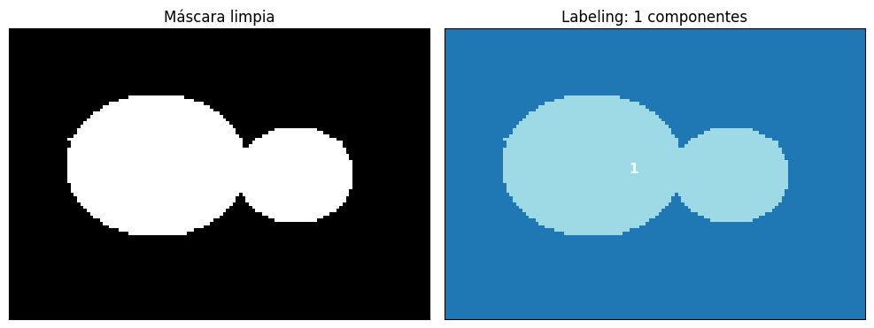
label= 1 area= 2745 centroid=(42.9, 57.9)11.4 Skeletonize y thin
skeletonize calcula una representación medial del objeto.
thin adelgaza iterativamente la máscara. Si se le entrega max_num_iter, podemos detener el proceso antes de llegar al esqueleto final.
La diferencia práctica es útil: a veces queremos adelgazar un poco, no necesariamente llegar a una línea de un pixel.
shape = np.zeros((100, 120), dtype=bool)
shape[18:82, 50:68] = True
shape[38:56, 22:98] = True
shape[62:80, 28:52] = True
shape[60:88, 80:99] = True
thin_8 = morphology.thin(shape, max_num_iter=8)
thin_full = morphology.thin(shape)
skel = morphology.skeletonize(shape)
show_row(
[shape, thin_8, thin_full, skel],
["Original", "thin: 8 iteraciones", "thin completo", "skeletonize"],
figsize=(12, 3),
grid=False
)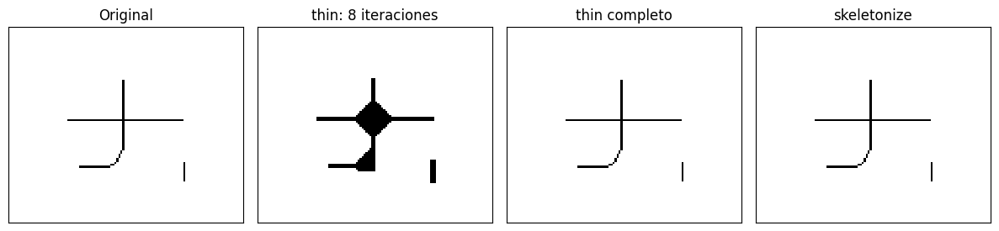
11.5 Escala de grises con una imagen real de ejemplo
Ahora usamos data.coins() de scikit-image.
La apertura gris atenúa detalles brillantes pequeños. El top-hat blanco extrae justamente esos detalles brillantes que la apertura removió.
Esto conecta con una idea práctica: si el fondo cambia lentamente y los objetos son pequeños, top-hat puede ayudar a resaltarlos.
coins = util.img_as_float(data.coins())
footprint = morphology.disk(12)
coins_open = morphology.opening(coins, footprint=footprint)
coins_close = morphology.closing(coins, footprint=footprint)
coins_tophat = morphology.white_tophat(coins, footprint=footprint)
coins_bothat = morphology.black_tophat(coins, footprint=footprint)
coins_grad = morphology.dilation(coins, footprint=footprint) - morphology.erosion(coins, footprint=footprint)
fig, axs = plt.subplots(2, 3, figsize=(12, 7))
for ax, im, title in zip(
axs.ravel(),
[coins, coins_open, coins_close, coins_grad, coins_tophat, coins_bothat],
["Imagen original", "Apertura gris", "Cierre gris", "Gradiente", "White top-hat", "Black top-hat"]
):
vmax = 1 if title in ["Imagen original", "Apertura gris", "Cierre gris"] else max(float(im.max()), 1e-6)
ax.imshow(im, cmap="gray", vmin=0, vmax=vmax)
ax.set_title(title)
ax.set_xticks([])
ax.set_yticks([])
plt.tight_layout()
plt.show()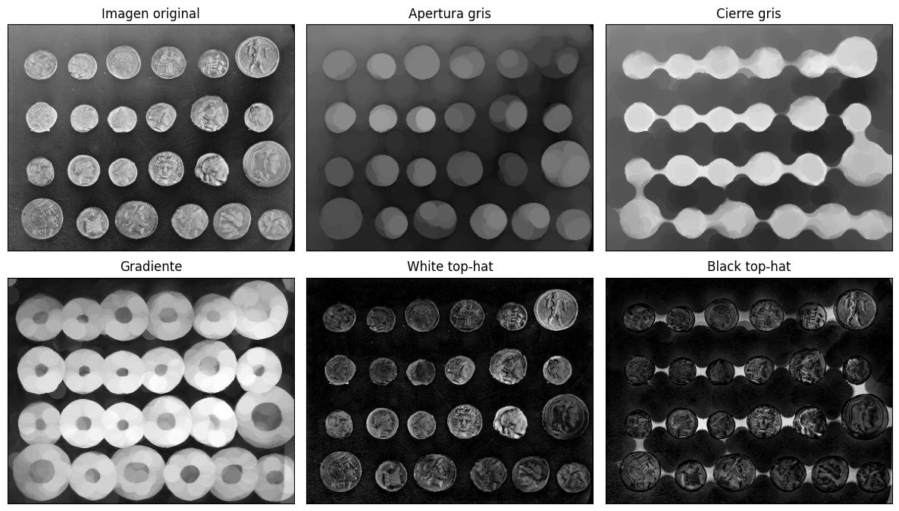
11.6 Segmentación simple: threshold + morfología
Un flujo muy común es:
- umbralizar una imagen;
- limpiar la máscara con morfología;
- etiquetar componentes;
- medir propiedades.
Este ejemplo no busca ser una segmentación perfecta de monedas; busca mostrar el rol de la morfología en un pipeline real.
threshold = filters.threshold_otsu(coins)
mask = coins > threshold
# Limpieza morfológica: cerrar huecos, remover objetos pequeños y rellenar cavidades.
mask2 = morphology.binary_closing(mask, footprint=morphology.disk(3))
mask2 = morphology.remove_small_objects(mask2, min_size=120)
mask2 = morphology.remove_small_holes(mask2, area_threshold=120)
labels = measure.label(mask2)
props = measure.regionprops(labels)
fig, axs = plt.subplots(1, 3, figsize=(13, 4))
axs[0].imshow(coins, cmap="gray")
axs[0].set_title("Imagen")
axs[1].imshow(mask, cmap="gray")
axs[1].set_title("Umbral Otsu")
axs[2].imshow(labels, cmap="tab20")
axs[2].set_title(f"Máscara limpia + labels ({len(props)})")
for ax in axs:
ax.set_xticks([])
ax.set_yticks([])
plt.tight_layout()
plt.show()
areas = [r.area for r in props]
print(f"Componentes detectadas: {len(props)}")
print(f"Área promedio: {np.mean(areas):.1f} pixeles")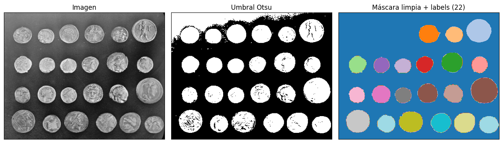
Componentes detectadas: 22
Área promedio: 2186.6 pixelesIdeas para experimentar
Prueba modificar:
- el tamaño del elemento estructurante, por ejemplo
disk(1),disk(5),disk(12); - la forma:
cross(3),square(5),disk(4); - la imagen binaria inicial;
- el número de iteraciones en el llenado o la poda.
Preguntas para profundizar:
- ¿Qué estructuras desaparecen cuando aumento el tamaño de \(B\)?
- ¿Qué cambia al usar cruz en vez de cuadrado?
- ¿Cuándo la apertura destruye información relevante?
- ¿Por qué hit-or-miss necesita condiciones sobre objeto y fondo?
- En escala de grises, ¿qué estructuras resaltan top-hat y bottom-hat?